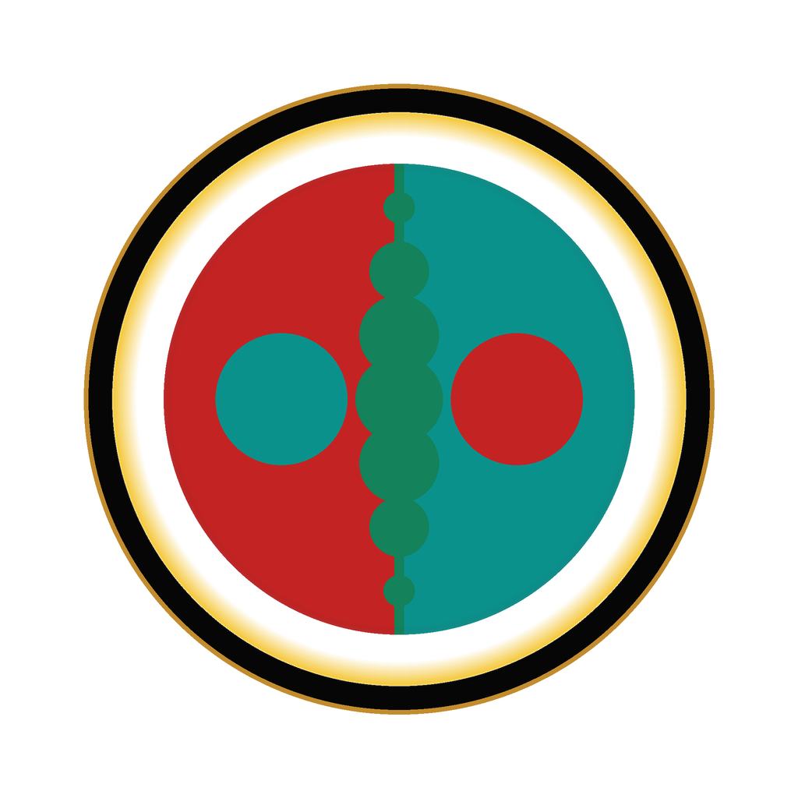

太易词典 暨意札记
收录“太易”理论中的核心符号、概念之钥，以及作者在求索路途中的思意札记与感悟。
进入密室
太易 · AGS
"于本源与流变之交汇处，吾见真如。"
(At the nexus of origin and change, I find the pivotal truth.)
欢迎步入这片由意识与体验交织而成的风景。
这并非一套僵硬的学说，而是我——一位求索者——在生命长河中，以独有的语汇和视角，对存在奥秘的持续叩问与尝试解读。我不敢断言其为放之四海而皆准的真理，然其精神内核，已与我心深深共鸣。
此间所录，皆为我对人类行为、思想及万千理论的静观与沉思。它或许烙印着时代的印记，甚至不乏显见的瑕疵。但我无意斧正这些细枝末节，因其核心的灵光已然点亮。余下的，便交由每一位有缘的读者，在各自的心田中去消化、去辨析、去感悟。
本理论的核心，唯在存在本身。
这些看似奇特的词汇与概念，因其源自我极个人的内在体验，而具有相当的抽象性。如同那微妙的爱意，或一刹那的顿悟，我难以用世俗的语言向您精确描绘其万一。
唯一的“解读”方式，或许是“以心印心，以体验共鸣”。
这更像是一次体验，一场对生命、灵魂、自我、乃至那超越“我”之存在的震撼之旅。文中（除杂记外）的每一个字，都经过反复的沉吟与斟酌，只为最大程度地映照我思想的轨迹。
理解这一切的门槛，或许在于能否真正领悟“阴阳流转，虚实相生”的本质，以及那古老智慧中“金丹（或谓内在炼金）”是如何“炼”成的。这或许需要读者对东方与西方的古老智慧（如道、佛、印度教、乃至某些神秘主义传承）的核心教义有所涉猎与感悟。当然，当您真正通达这些之时，我这份尚不完善的个人心得，于您而言，或许已是路旁的风景了。
若您在阅读中感到困惑不解，这是全然正常的，亦是我完全可以理解的。
这整个理论，更多的是我个人证悟体验的忠实记录，是意识洪流在沉淀、提纯后的动态思维印记。我无法直接“告知”您它“是”什么，因为这指向的是一种纯粹的内在体验，是一种深刻的生命转化。此类“真知”，唯有通过自身的体证，方能真正了然于心（诚如古语所言：道可道，非常道；名可名，非常名）。
因此，您可以将整个项目视为一个灵魂在特定时空节点下，思想变迁的真诚袒露。又或者，它是一面镜子，有缘人或许能从中瞥见自身内在的某些共鸣，从而获得些许启发，照亮前行的道路。这些理论并非通往证悟的知识地图，更像是证悟之后的回响与反馈。它们或许能与某些已然走在相似道路上的心灵产生共鸣，但对于尚未踏上或选择不同路径的灵魂，其“有用性”自然因人而异。
我常常在想，人们何以战斗？何以生存？我们是否只是以各种不同的生命形式，被某种力量抛入这个世界，来感受这一切的悲欢离合？我不知道。但我看到形形色色的人们穿梭于街巷，他们来到这里的理由又是什么？我依然不知道。
曾几何时，我感觉自己行走在通往消亡的幽径上，无能为力地注视着那些“正常人”的欢声笑语，心中充满了无处安放的迷茫与不甘。也许，知晓与否，并不能改变个体最终逝去的结局。但是，正是那股源初的生命力，那份不可思议的“法生”因缘，使我得以经验此生。如此想来，我又何尝不是行走在生命的道路上呢？
灵性的探索或许美好，但我最初踏上这条道路，并非出于对玄妙境界的刻意追求（至少主观上如此）。我想走的，是一条生命本身的路，一条寻求真正解脱的路，甚至是一条连”自由”这个概念本身也要从中解脱出来的路。因此，这些文字所记录的，更像是一场深刻的自我革命，一次与内在所有面向的艰难融合。这条道路的终点，也许会显现出”有我”的真实，也许会消融于”无我”的空寂，谁知道呢？一旦踏上生命的征途，便再也没有现成的答案可以依循，唯有的是亲身的体悟与艰难的证悟。所以，请与我一同期待这场探险吧。
一个人置身于无穷的复杂可能性中，若不持有一个依照进行收敛，便无法在无限事态中守住任何坚守与道德的需要。学校可授文化知识，社会可授人际知识，唯独”如何的元道德知识”、”如何坚守正义”，是任何领域都无法讲解的叙事。缺了这一依照，存在便沦为漂泊——顺从旧有的本性习惯，任其形成势能，终将造就无法遮掩的罪恶。
故此必须有一个追问，用以确立自己的宪则，自己的不可动摇的神圣。这关乎个体与世界的主权性。我无法容忍存在的漂泊，需要一个能解答世界的东西，而非普罗大众的知识。
整个理论的核心内容，主要蕴藏于五个基础的魔法体系之中（具体分布在压缩包内的四个核心文件中）。这些可以视为理解本理论的基石。
其余的“经文”与“杂谈”，则是对这些核心思想的补充、阐释与多角度的映照。其中，或许隐藏着一些等待有心人发现的“彩蛋”或“密匙”。
在此基础上，亦有一些可被视为进阶魔法的后续探索，它们是在基础魔法之上生发出来的、更为精微或更具整合性的智慧展现。这些进阶的魔法，往往需要对基础魔法有更深的体悟方能领会。
整体而言，这个项目是我在某个特定生命阶段，个人智慧与内在境界的一次“数据备份”。因为深知人之感悟，易随光阴流转而褪色或遗忘，将这份内在的探索固化下来，便成了一种守护记忆的必要。
在文中，部分字母代符因其在不同“境界”（或可理解为同一理论框架下的不同参照系/同界标准）下所指代的概念有所演化，故可能出现重叠使用的情况。这并非疏漏，而是为了展现思维的动态性与概念的流动性。请务必结合上下文的语境，以及该符号在特定“境界”或讨论主题下的具体定义，来判断其确切含义，如同我们在日常对话中理解词语的多义性一样。
现在，请允许我们一同期待，那些美好的、深邃的、甚至令人不安的体验，在这场心灵的探险中悄然发生。
若愿在流变中捕捉吉光片羽，或通过邮件接收未收录于此的即时随笔与更新，
欢迎前往 Substack 订阅我的专栏。
文本的生命在于交流。若您对文中的思想有所共鸣、疑问或洞见，欢迎前往我们的思想沙龙，与其他求索者一同探讨，让智慧在碰撞中生辉。